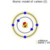
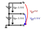
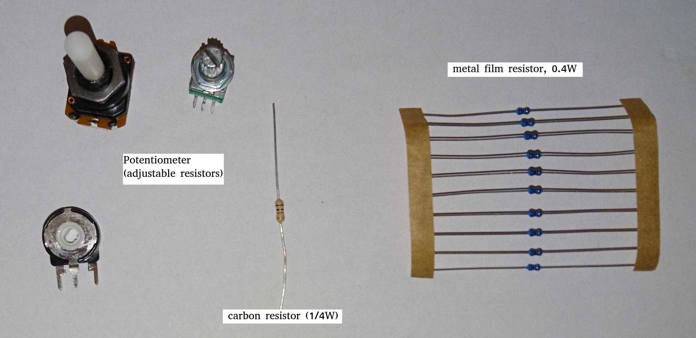

Prequel Introduction to electronics
While I was about to write the implementation part of the boolean algebra post, the basic logic gates, the writing process got quickly out of hand and I caught myself to write more about less connected topics like explaining basic electronic components and their implementation on silicon than the actual content, here shall be the place for those excursions. This is not meant to be a complete reference more a supplement to existing literature.
Free electrons and electric current
What is electricity? Broadly speaken it is the flow of electrons in a conductor. In laymans term you can say, electrons on the outer shell - also called as valence band - of an atom are hopping from the valenece band of an atom to the adjacent one. So essentialy electricity constitutes the movement of electrons through matter. In practical application this matter is an electrical circuit, but also for example the lightning discharge occurs, in this case the ionised air can be considered as the (short) circuit.
Going atomic: Conductors…
The first group of elements (or compounds) we will introduce here are the conductors. Some important representants of this group are the elements aluminium and copper which both are indispensible for electric transmission lines and power grids. As the table below depicts, both elements have free electrons available on it’s valence shell, which as described above, are needed to allow the hopping of electrons from one atom to another and thus allow movement of electrons, making the element (in its pure form) a conductor.
Of course in real world there are multiple factors counteracting to the idealized properties proposed here. E.g. we have to consider among others that metals oxide when coming in contact with oxygen, which builds up a thin but effectively isolating layer on the surface of the metal, preventing a good contact. We might discuss such effects later. For now just let’s continue on the topic…
conductor |
|
|
|
atomic model of aluminium (13) |
atomic model of copper (28) |
valence shell / free electron(s): 3 (3) |
valence shell / free electron(s): 1 (1) |


\large \[Q = N \cdot (\pm e)\]
\large \[I = \frac{\Delta Q }{\Delta t}\]
…and not so conductors
The second group of elements we want to introduce here are elements which conductivity is (highly) dependent on its purity degree and environment factors like temperature. Representants of this group are called semiconductors. Carbon and silicon are examples showing up on the periodic table. The author picked those two elements as they have very exciting properties in regards to - but not limited to - conductivity.
semiconductor |
|
 |
|
atomic model of carbon (6) |
atomic model of silicon (14) |
valence shell / free electron(s): 4 (0) |
valence shell / free electron(s): 4 (0) |

So why does carbon and silicon have so poor conductivity properties compared to copper despite their four electrons on the valence shell electrons?
The answer lies in the simple fact, that both carbon as well as silicon form a lattice, using up all electrons of the valence shell.
covalent bonding of carbon |
covalent bonding of silicon |
|
|
semiconductor |
|


Voltage and potential
The table below shows the common symbols for voltage sources. On the left side an ideal voltage source is shown, while on the right side a real voltage source is shown. As you can see the real source resembles a battery cell. Of course the voltage source can differ from an actual battery cell, and also most often is not displayed implicit.
ideal voltage source |
real voltage source |
|
|

An ideal voltage source provides a voltage of a certain level.
As we can see in below shown circuit schematics a voltage is just the difference between two potentials. In the first example (left) the junction at the bottom is choosen as reference point, as it is signaled as ground. So the voltage amounts to 1.5V for U_B0 respectively to 3V for U_A0. Whereas in the example on the right the junction between the battery cells is choosen as reference point and ground. The potential differences we measure here are: U_A0 = 1.5V and U_B0 =-1.5V. As a remark dual power supplies like that with - however with a voltage range of 12…15V - are often used for applications with op-amps.
Single power supply |
Dual power supply |
 |
|

\large \[U = \phi_{1} - \phi_{0}\]
The next image shows the simplest possible circuit: A voltage source with a resistor in series. Physically seen every resistor is just a converter from electrical energy to thermically energy, thus heat.
Resistors are generally used in circuits to drop the voltage to the desired level, respectively limit the current flowing between certail paths of a circuits. We will learn about it in the next section.
Ohm’s law and lead resistance
Exercise: Measure Resistance To execute the following exercise you need one voltagemeter and one amperemeter (or just two multimeters), a variable voltage source and some sample wires of different materials but same in length and diameter. If you do not have the equipment, in theory you could also simulate this exercise in Qucs or LTspice.
But as we need to upfront define the parameters of sample wires we want to measure, this approach kinda torpedoes the purpose of the exercise, of learning how to do an indirect measurement of electrical resistance.
Connect the equipment according to the figure shown below, with the sample wire as the resistor Rx.

Now, for every wire measure the voltage and the current and plot a graph of it with voltage on x-axis and current on y-axis. You will see that for different materials, you get a linear graph but with a different slope. So you have find a relation between voltage current and resistance. In addition after measuring the different wires you can also use pen & paper: draw a line with a pencil or scribble a small area. Now connect these with the probes of the measurement assembly. You will see, that also the graphit trace work as a conductor - not an optimal one but a conductor.
This observance leads us to the most important formula you will encounter in an electrical engineering 101 course, Ohm’s law.
\large \[ R [\Omega] = \frac{U [V]}{I [A]}\]
When we rearrange this equation to its simpler interpretable form, U = R·I, we recognize, that the voltage drop (U) on the Resistor corresponds to the resistance value ( R) times the current flowing thru (I). We did not speak about the current yet and we will postpone this to a later section. As indicated in the brakets the unit of Resistance is Ω.
In the image below the rules for series and parallel connection of resistors are shown.
For the series connection the values simply adds up like we have seen it for the voltage sources, while for the parallel connection see same applies, however for the conductance G which is the reciproce of the resistance R and measured in S(iemens).
So we discovered that the materials differ in their electrical conductivity - which is the reciprocal of the electrical resistance - some are good (conductor) some are pretty bad and unusable (non-conductor) but nevertheless useful as dielectric, as we will see in the next section and some in between. We also need to note, of course that the conductivity is not only dependent on the material itself but also its geometries (further it is also dependent on the temperature, but I will not go into this here), you know we handle with physics, so another useful formula / equation in this context is the following.
\large \[ R = \frac{\rho L}{A}\]
For the most common rectangle form - like a strip conductor on a PCB - area A resolves to width times height
\large \[ R = \frac{\rho L}{A} = \frac{\rho L}{w \cdot h}\]
So the total resistance of a wire or a strip conductor on a PCB is dependent upon the specific resistivity ρ, the length of the conductor and the area used to transfer the current. Logically the specific resistivity as well as the length of the conductor increases the resistance while the area counteracts it.
Why do we need to know this?
At this point you may ask why it is important to know this if we can just pull a schematic of our DIY project and realize it with discrete components on a breakout board- the answer is simple scale - it might work for this simple hobbyist example but lack scalibility,costs and / or reliability.
The further we get down on scale the more important parasitic effects become - we will learn about it in the subsequent sections.
Resistance measurement
Below figure shows the principal of resistance measurement applied within a digital multimeter - leaving aside the range switch. On the left side we have a constant current source, in the middle the resistor - or wire under measurement and on the left a voltmeter measuring the voltage. As with the constant current source the overall current in the circuit is known, the resistance can be scaled from that with the voltage measured.

The Resistor
The electrical component itself comes in all shapes and sizes dependent on the area of application. the miniature ones for surface mounted devices technique, used in all higher integrated electronic devices, the average 1/4 Watt resistor based on coal with 5 percent tolerance ( in the picture below shown central) and the more precise metal film resistors with 1 percent tolerance (blue, shown right in the picture). There are resistors with mechanically adjustable resistance called potentiometer (like the ones shown left in the picture ) Other types are varistor where the resistance is dependent upon the voltage applied, some other types like NTC / PTC depending on the temperature.


////Explain structure and costruction of smd resistors////